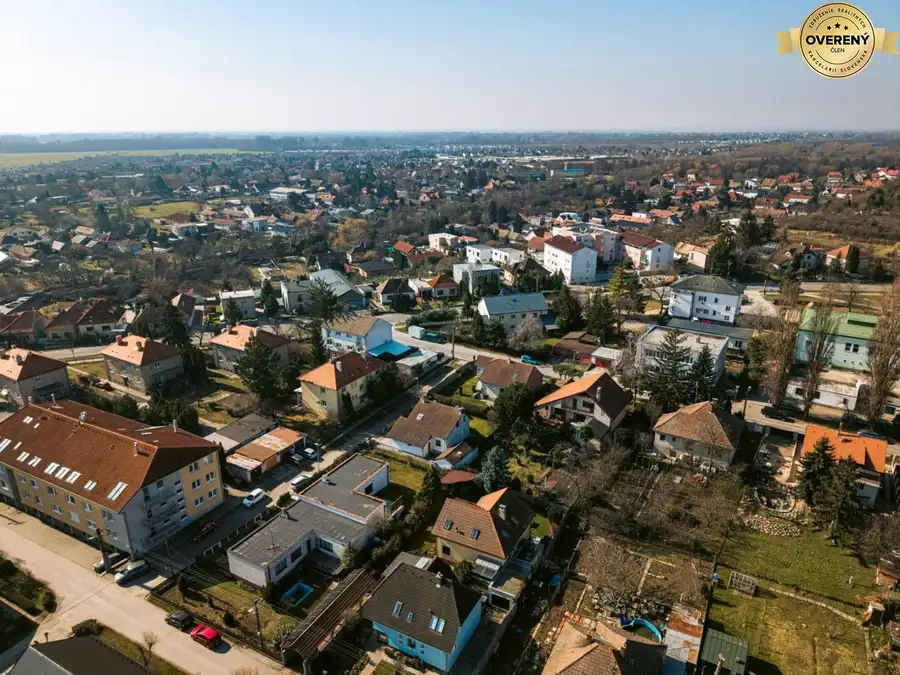
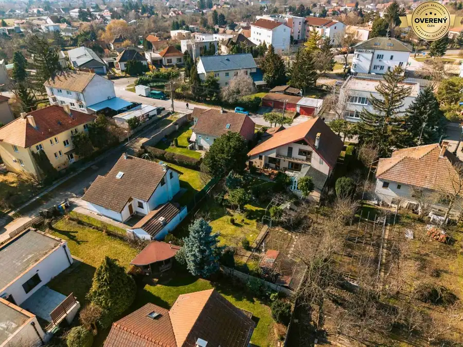
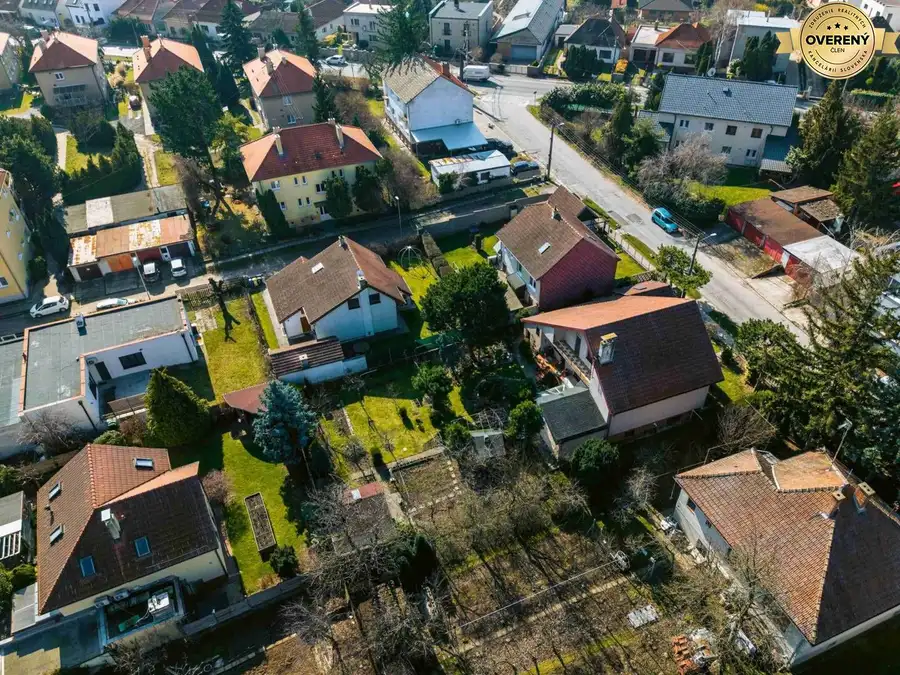
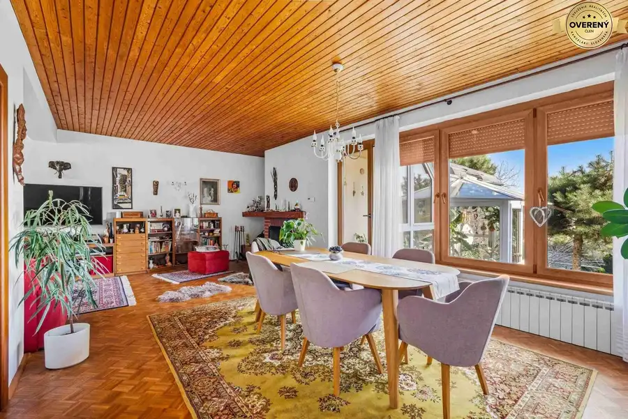
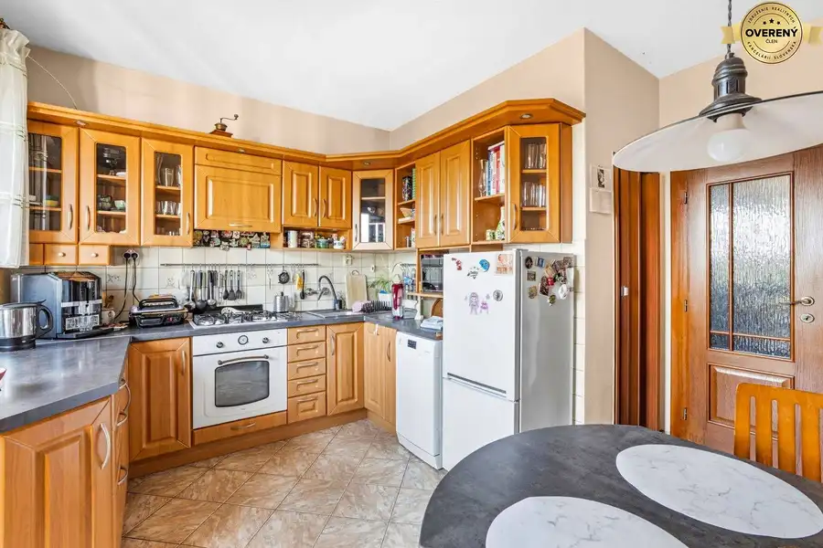

Nadštandardný rodinný dom v centre Bernolákova
Bernolákovo






- Plocha428 m²
- Stavčiastočne prerobený
O nehnuteľnosti
Hľadáte nehnuteľnosť, ktorá vás nebude obmedzovať? Ponúkame na predaj tehlový rodinný dom na
Viničnej ulici
, ktorý je dokonalou odpoveďou na potrebu veľkorysého životného priestoru, súkromia a strategickej polohy.
Dom pre náročných a veľké rodiny
Tento objekt je ideálnou voľbou pre klientov, ktorí hľadajú nadštandardnú metráž a nekompromisný komfort. Vďaka inteligentnému rozdeleniu na štyri podlažia a prítomnosti vedľajšej budovy je dom predurčený aj na
viacgeneračné bývanie
, kde každá generácia nájde svoje úplné súkromie pod jednou strechou.
-
4 podlažia plné možností:
Od relaxačnej zóny so saunou a krbom v suteréne až po tiché podkrovie s vlastným šatníkom.
-
Zimná záhrada:
Miesto pre váš ranný relax bez ohľadu na ročné obdobie.
-
Vínna pivnica:
Unikátny priestor v 2. podzemnom podlaží pre milovníkov vína.
Spojenie bývania a podnikania
Súčasťou ponuky je
samostatná budova
, ktorá otvára dvere vašim podnikateľským ambíciám. Či už plánujete zriadiť kanceláriu, ateliér alebo súkromnú prax, tento priestor s vlastným sociálnym zázemím a klimatizáciou vám umožní oddeliť pracovný život od súkromného bez nutnosti dochádzania. Objekt v minulosti slúžil ako stomatologická ambulancia.
Strategická poloha: Bratislava na dosah
Bernolákovo je vyhľadávané práve pre svoju
vynikajúcu dostupnosť do Bratislavy a na dilaničné napojenie
.
-
Rýchla logistika:
Či už využívate auto, alebo preferujete vlakové spojenie, do hlavného mesta sa dostanete v priebehu pár minút, čo z nehnuteľnosti robí ideálnu základňu pre aktívnych ľudí pracujúcich v metropole.
-
Všetko po ruke:
V pešej dostupnosti sa nachádza kompletne zrekonštruovaná a dostavaná škola, škôlka, pošta aj zastávky verejnej dopravy.
Technický stav a vybavenie:
-
Poctivá stavba:
Murovaná konštrukcia (tehla) so zateplením a kvalitnou izoláciou.
-
Modernizácia:
Dom prešiel postupnými rekonštrukciami (1995 – 2014) vrátane výmeny okien za plastové s elektrickými roletami, nových podláh a kotla.
-
Záhrada:
Na pozemku sa nachádza aj praktický drevený záhradný domček
Zaujala vás táto ponuka?
Tento dom ponúka oveľa viac než len metre štvorcové – ponúka životný štýl a slobodu v rozhodovaní, ako priestor využijete. Kontaktujte nás pre dohodnutie obhliadky. Viac informácií na tel.č. alebo - Matúš Bendík
Cena: 534 000,-€
Parametre
- Rozloha pozemku
- 867 m²
- Zastavaná plocha
- 199 m²
- Úžitková plocha
- 428 m²
- Poschodie
- neuvedené
- Počet poschodí
- 4
- Stav
- čiastočne prerobený
- Status
- aktívne
- Voda
- verejný vodovod
- El. napätie
- 230V
- Plyn
- áno
- Kanalizácia
- áno
- Kúpeľňa
- áno
- Vykurovanie
- áno
- Balkón
- áno
- Lódžia
- nie
- Terasa
- áno
- Pivnica
- áno
- Garáž
- nie
- Postavené z
- tehla
- Energetický certifikát
- nie
- Predzáhradka
- nie
- Okná
- plastové
- Terén
- rovina
- Dátum zverejnenia
- 2026-03-11
Kde to je
Mohlo by Vás zaujímať
 BytNové
999 999 999 €Moderný 2-izbový mestský byt s priestrannou terasou
Staré Mesto, Bratislava
2-izbový60.2 m²1. podlažie
BytNové
999 999 999 €Moderný 2-izbový mestský byt s priestrannou terasou
Staré Mesto, Bratislava
2-izbový60.2 m²1. podlažie
 BytNové
999 999 999 €Vrcholné bývanie v priestrannom 4-izb. mezonete na exluzívnej adrese
Staré Mesto, Bratislava
4-izbový167 m²4. podlažie
BytNové
999 999 999 €Vrcholné bývanie v priestrannom 4-izb. mezonete na exluzívnej adrese
Staré Mesto, Bratislava
4-izbový167 m²4. podlažie
 BytNové
999 999 999 €Rodinná rezidencia s veľkorysou privátnou záhradou
Staré Mesto, Bratislava
4-izbový130.48 m²2. podlažie
BytNové
999 999 999 €Rodinná rezidencia s veľkorysou privátnou záhradou
Staré Mesto, Bratislava
4-izbový130.48 m²2. podlažie